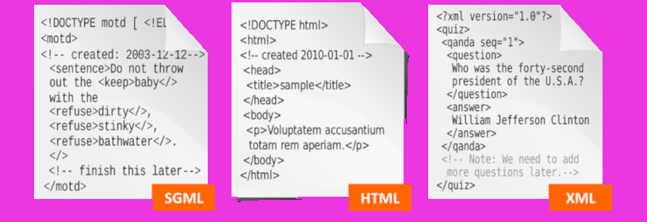
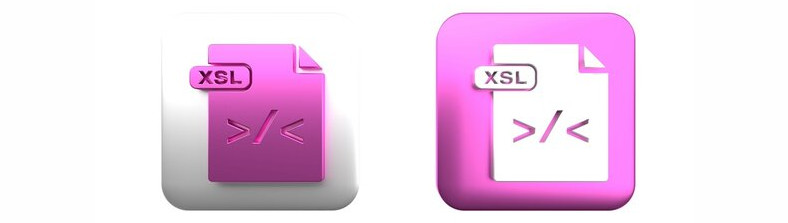

Os fundamentos do HTML estão fortemente ligados ao DOM (Document Object Model), que representa a estrutura de um documento HTML na forma de uma árvore de elementos.
exemplo ->No HTML, o DOM organiza os elementos de maneira semântica, permitindo que navegadores interpretem e renderizem o conteúdo adequadamente.
exemplo ->No XML, a estrutura também pode ser representada como uma árvore de nós, mas sem a semântica pré-definida do HTML, exigindo que os desenvolvedores definam seus próprios elementos e regras.
exemplo ->Essa relação entre HTML e XML nos permite compreender como a marcação é usada para estruturar dados e como as regras de sintaxe impactam a interpretação dos documentos.exemplo ->
Após estabelecer essa base comparativa, avançaremos para um estudo mais específico, abordando a sintaxe detalhada do XML, suas regras de bem-formação, validação com DTD e XML Schema, além das tecnologias associadas, como XPath, XSLT e XQuery.
exemplo -> XSL é uma linguagem que define como apresentar e transformar documentos XML. XSL é uma família de recomendações que inclui XSLT, XPath e XSL-FO. fornece a um navegador com informações sobre como exibir um documento XML.
exemplo -> 